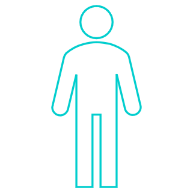
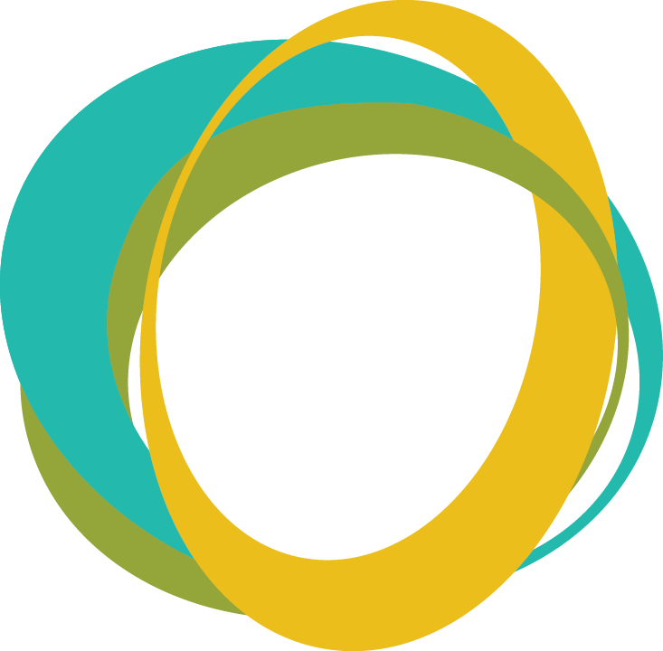

성별 : {{gender}}
키 : {{ session["height"] }} cm
몸무게 : {{ session["weight"] }} kg
허리둘레 : {{ session["core_cm"] }} cm

기초 체력 입력 목록
- 윗몸일으키기 : {{ content["situp"] }} 회
- 앞으로 굽히기 : {{ content["sitflex"] }} cm
- 오래 달리기 : {{ content["longrun"] }} 분
- 왕복 10m 달리기 : {{ content["run10m"] }} 분
- 멀리 뛰기 : {{ content["longjump"]*10 }} cm
체지방률 {{results_body}}%
여성 : 18~22.9(정상), 23~27.9(경계), 28~32.9(이상), 33(비만)
남성 : 8~15.9(정상), 16~19.9(경계), 20~24.9(이상), 25(비만)
종합 평가 및 분석
000님의 실제 나이는 000, 신체 나이는 {{results_age}}입니다.
기초 체력 항목 비교 결과에 따르면 개의 항목이 평균 데이터와 비교하여 높은 값을 가지고 있고
개의 항목에서는 비교적 낮은 값을 가지고 있습니다.
따라서 이를 보완하기 위한 운동 방법은 아래와 같습니다.
버튼을 클릭하여 운동방법을 확인해보시기 바랍니다.